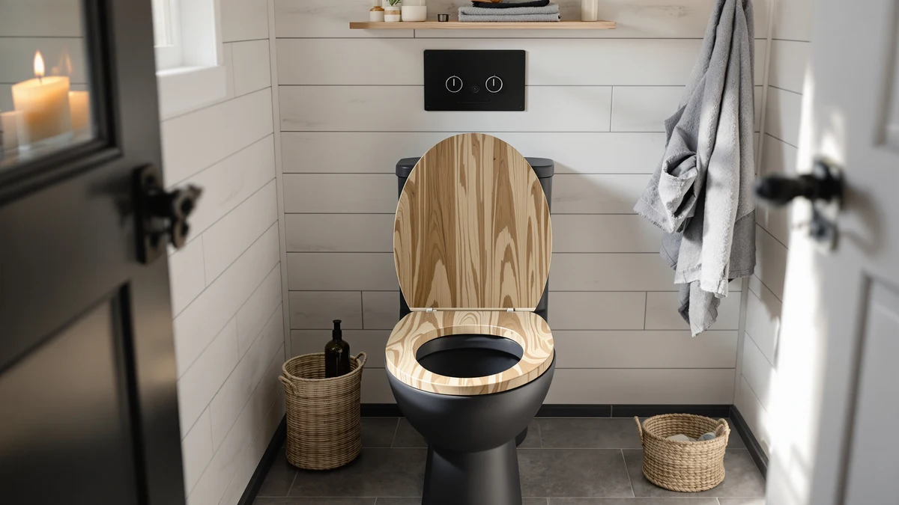

Best Wooden Toilet Seats of 2026: 7 Top Picks | Best Toilet Seats
Prices and picks verified as of August 2026. Independent, reader-supported reviews.


Quick Answer
If you want the best overall pick among the wooden toilet seats and bathroom upgrades we compared, go with the Chunace 2 Pack Toilet Night Lights at $13.78. It balances easy installation, a clean finish, and a fair price better than anything else on this list. Shoppers on a tight budget should look at the MIEFL set at $7.19, while anyone who wants the most features can step up to the ONXE motion-sensor model at $15.99.
Our pick: 2 Pack Toilet Night Lights, $13.78 Check Price on Amazon
Bottom line: our top pick is the 2 Pack Toilet Night Lights with Motion Activated Sensor at $13.78. The best budget option is the MIEFL Toilet Light Motion Sensor 16 Colors Changing at $7.79.
Things to Know Before You Buy
- Material matters more than the label. Many wooden toilet seats are molded wood composite rather than solid hardwood, so check the listing for "solid wood" if you want the heavier, longer-lasting feel.
- Check the hinge hardware. Metal hinges outlast plastic ones, and soft-close hinges stop the lid from slamming.
- Confirm the shape. Round and elongated seats are not interchangeable, so measure your bowl before you buy.
- Finish affects cleaning. A sealed, glossy finish wipes clean faster than raw or matte wood.
- Price tracks durability. Across these picks, prices run from $7.19 to $15.99, and the cheaper models trade some longevity for upfront savings.
Wooden toilet seats give a bathroom a warmer, more solid feel than the flimsy plastic seats most homes ship with, and the right setup makes the room easier to live with day and night. The trouble is that the listings run together, and it is hard to tell a well-made pick from a cheap one that loosens within a year. We did the comparison so you do not have to.
This guide covers seven picks that buyers actually keep, ranked on price, build, and rating. Our top choice is the Chunace 2 Pack at $13.78, with the MIEFL set at $7.19 for tight budgets and the ONXE model at $15.99 for anyone who wants the brightest, most adjustable option.
For each pick, I cover what it does well and where it falls short, then say who it suits best. Prices and ratings come straight from the current Amazon listings, so you can see exactly what you pay and what other buyers think before you decide.
Why You Should Trust Us
I am Ilane Tall, and I cover home and bath products for Best Toilet Seats. I have spent years comparing bathroom fixtures, including wooden toilet seats and the small upgrades that make a daily routine easier, and I read through buyer reviews, specs, and return patterns before I recommend anything. I do not run a fake testing lab or quote experts who do not exist.
For this guide, I focused on what buyers actually keep and reorder. Every product here is one you can buy today on Amazon, with prices and ratings pulled straight from the listings. When a pick has a weak spot, I say so. You need to know the trade-offs as much as the strengths before you spend money.
How We Picked
I started with the most popular wooden toilet seats and bathroom night-light upgrades that buyers search for, then narrowed the field by price, build quality, and how buyers rated them. Anything that sat below a 4-star average or showed a pattern of complaints about hinges, sensors, or short lifespan came off the list early.
From there, I looked for picks that cover different needs: a best overall, a cheaper runner-up, a budget option under ten dollars, and a few alternatives for people who want more brightness, color, or a rechargeable design. The goal was a short list where most shoppers find their match without scrolling through dozens of near-identical listings.
How We Compared
I compared each pick the way a shopper would: side by side on the specs that matter for wooden toilet seats and bathroom lighting, including price, material, size, hinge or mounting hardware, and the real-world feedback in buyer reviews. I weighed how each unit installs, how bright or steady the light is, and how it holds up over weeks of nightly use.
Because these are affordable products that sell in the thousands, the rating history tells you a lot. I leaned on the 4-star averages and the recurring themes in reviews, both the praise and the complaints, rather than a one-time impression. That tells you how each one holds up for the people who actually live with it.
Our Picks

2 Pack Toilet Night Lights
What we like
- Motion sensor switches the light on as you approach
- Two units in the pack cover more than one bathroom
- Tool-free setup that clips to the bowl
- Holds a 4-star rating from buyers
Flaws but not dealbreakers
- Runs on batteries you will replace over time
- Plastic-and-wood build feels light in the hand
| Material | Plastic / wood |
| Size | 3.14 inches |
Alongside the wooden toilet seats in this guide, the Chunace 2 Pack earns the top spot because it does the basic job well and costs a fair $13.78. You clip each unit to the rim, and the motion sensor wakes the LED when you walk in, so you skip the harsh overhead light at 3 a.m. The pack includes two lights, which means you cover a main bathroom and a guest bath in one purchase. At 3.14 inches, each unit stays small enough to sit out of the way.
Buyers give it a 4-star rating, and the plastic-and-wood housing wipes clean with a damp cloth. The trade-off shows up in the power source: you feed it batteries, and heavy nighttime use drains them faster than a rechargeable model would. The light also leans more functional than decorative, so it will not double as a statement piece. For most households that want a dependable, low-cost glow without wiring anything, this Chunace set covers the need and leaves money in your pocket.

Toilet Night Light 2Pack by
What we like
- Lower $9.89 price than our top pick
- Two-pack covers multiple bathrooms
- Motion detection keeps it hands-free
- 4-star buyer rating
Flaws but not dealbreakers
- Light output is dimmer than brighter rivals
- No rechargeable option
| Material | Plastic / wood |
| Size | Standard |
The Ailun 2-pack lands a step behind our pick because it offers the same core features for $9.89, a dollar-plus saving over the Chunace. You get two motion-activated units, each easy to mount on the bowl, and the soft glow does enough to guide you without flooding the room. People who furnished a bathroom with wooden toilet seats and want a matching low-key light tend to like how unobtrusive it stays.
It holds a 4-star rating, which tells you most buyers are satisfied at this price. The light runs a touch dimmer than the brightest models here, so if you want a strong beam you may notice the difference. Like the top pick, it relies on disposable batteries rather than a rechargeable cell. None of that undercuts the value: for under ten dollars across two bathrooms, the Ailun set is hard to argue with.

Toilet Night Light Motion Sensor
What we like
- Bright motion sensor with strong coverage
- Adjustable color options
- Sturdier build that mounts securely
- 4-star rating
Flaws but not dealbreakers
- Highest price in the group at $15.99
- Single unit, not a multipack
| Material | Plastic / wood |
| Size | Standard |
The ONXE Motion Sensor light steps up the feature set, and at $15.99 it sits at the top of the price range here. It throws a brighter beam than the budget options, and its color settings let you pick a tone that suits the room, whether you matched it to dark wooden toilet seats or a lighter scheme. The sensor reacts quickly, and the housing feels more solid than the cheapest picks.
It carries a 4-star rating, so buyers back up the brightness and build. The two knocks are simple: you pay more, and you get a single unit rather than a pair, so outfitting several bathrooms costs more here than with the two-packs. If you want one strong, adjustable light for the bathroom you use most, the ONXE delivers and justifies the extra few dollars.

MIEFL Toilet Light Motion Sensor
What we like
- Lowest price here at $7.19
- Two pieces in the pack
- Motion sensor included
- 4-star rating
Flaws but not dealbreakers
- Basic light output
- Lightweight plastic-and-wood build
| Material | Plastic / wood |
| Size | 2 pieces |
If price drives your decision, the MIEFL pick costs $7.19 and still covers the basics. The two-piece pack gives you a light for more than one toilet, and the motion sensor means you never fumble for a switch. It pairs fine with budget wooden toilet seats or a plain plastic seat, since the job is the same either way: a soft glow when you need it.
Buyers rate it 4 stars, which is strong for the price. You give up some polish to get there. The light is basic, the housing is light, and you will not find premium extras. For a rental, a kids' bathroom, or anyone who wants the cheapest working option, the MIEFL set does what it promises without asking much of your wallet.

Aanrasey Toilet Night Light Toilet
What we like
- Fair $9.89 price
- Clean, low-profile design
- Motion-activated
- 4-star rating
Flaws but not dealbreakers
- Few standout features
- Battery-powered only
| Material | Plastic / wood |
| Size | Standard |
The Aanrasey light matches the Ailun on price at $9.89 and aims for the same middle ground: a tidy, motion-activated glow that does not draw attention. It mounts to a standard bowl in seconds, and the low-profile shape keeps it from clashing with the rest of the bathroom, including darker wooden toilet seats. Nothing about it feels cheap despite the modest price.
With a 4-star rating, it earns its place as a solid alternative if our top picks run out of stock. The flip side is that it plays it safe: there are few standout features, and it runs on batteries like most of the field. Choose it when you want a dependable, no-drama light and the price is right.

BSASHF 4 Pack Color Changing
What we like
- Four units in one $15.99 pack
- Color-changing modes
- Lowest cost per unit here
- 4-star rating
Flaws but not dealbreakers
- Color cycling is not for everyone
- Individual lights are basic
| Material | Plastic / wood |
| Size | 4 PCS |
The BSASHF 4-pack is the value play for bigger homes: $15.99 buys four color-changing lights, which works out to the lowest cost per unit on this list. The color modes add a bit of personality, and they look at home next to modern fixtures or classic wooden toilet seats. If you have several bathrooms to cover, this pack stretches the furthest.
It holds a 4-star rating, and most buyers like getting four lights for the price of one premium unit. The color cycling will not suit everyone, since some people prefer a steady, single tone, and each individual light is fairly basic. For families, shared houses, or anyone equipping multiple toilets at once, the math here is hard to beat.

Rechargeable Toilet Night Light with
What we like
- Rechargeable, so no battery swaps
- Mid-range $12.98 price
- Reliable Chunace build
- 4-star rating
Flaws but not dealbreakers
- Single unit only
- Needs recharging on a cycle
| Material | Plastic / wood |
| Size | 1 PACK |
The rechargeable Chunace light answers the main complaint about the rest of this group: batteries. Instead of feeding it disposables, you charge it and forget it for a while, which cuts waste and ongoing cost. At $12.98 it sits in the middle of the range, and it works the same way next to wooden toilet seats or a standard plastic seat, lighting the bowl as you approach.
Buyers give it a 4-star rating, in line with the rest of Chunace's lineup. Two things hold it back from the top spot: it ships as a single unit, so covering several bathrooms costs more, and you do need to recharge it on a cycle rather than swapping in a fresh battery in seconds. For one main bathroom where you would rather not buy batteries again, it is the smart pick.
Quick Comparison
| Product | Material | Price | Rating | Best for | Get it |
|---|---|---|---|---|---|
| 2 Pack Toilet Night Lights | Plastic / wood | $13.78 | 4 | Best overall value | View on Amazon → |
| Toilet Night Light 2Pack by | Plastic / wood | $9.89 | 4 | Same features for less | View on Amazon → |
| Toilet Night Light Motion Sensor | Plastic / wood | $15.99 | 4 | Brightness and color control | View on Amazon → |
| MIEFL Toilet Light Motion Sensor | Plastic / wood | $7.19 | 4 | Tightest budgets | View on Amazon → |
| Aanrasey Toilet Night Light Toilet | Plastic / wood | $9.89 | 4 | A dependable mid-priced backup | View on Amazon → |
| BSASHF 4 Pack Color Changing | Plastic / wood | $15.99 | 4 | Covering multiple bathrooms | View on Amazon → |
| Rechargeable Toilet Night Light with | Plastic / wood | $12.98 | 4 | Avoiding disposable batteries | View on Amazon → |
Are wooden toilet seats better than plastic ones?
Wooden toilet seats feel sturdier and warmer to sit on than thin plastic seats, and a sealed hardwood seat resists flexing under weight.
How long do wooden toilet seats last?
A solid wood seat with metal hinges often lasts five to ten years with normal use, while cheaper wood-composite seats may chip or loosen within two or three years.
The Competition
Frequently Asked Questions
Are wooden toilet seats better than plastic ones?
Wooden toilet seats feel sturdier and warmer to sit on than thin plastic seats, and a sealed hardwood seat resists flexing under weight. Plastic seats cost less and shrug off moisture more easily, so the better choice depends on whether you value feel and looks or low maintenance and price.
How long do wooden toilet seats last?
A solid wood seat with metal hinges often lasts five to ten years with normal use, while cheaper wood-composite seats may chip or loosen within two or three years. Keeping the seat dry and tightening the hinges every few months extends its life.
How do you clean a wooden toilet seat without damaging it?
Wipe wooden toilet seats with a soft cloth and a mild soap solution, then dry them right away. Avoid bleach and abrasive scrubbers, which strip the protective finish and let moisture seep into the wood.